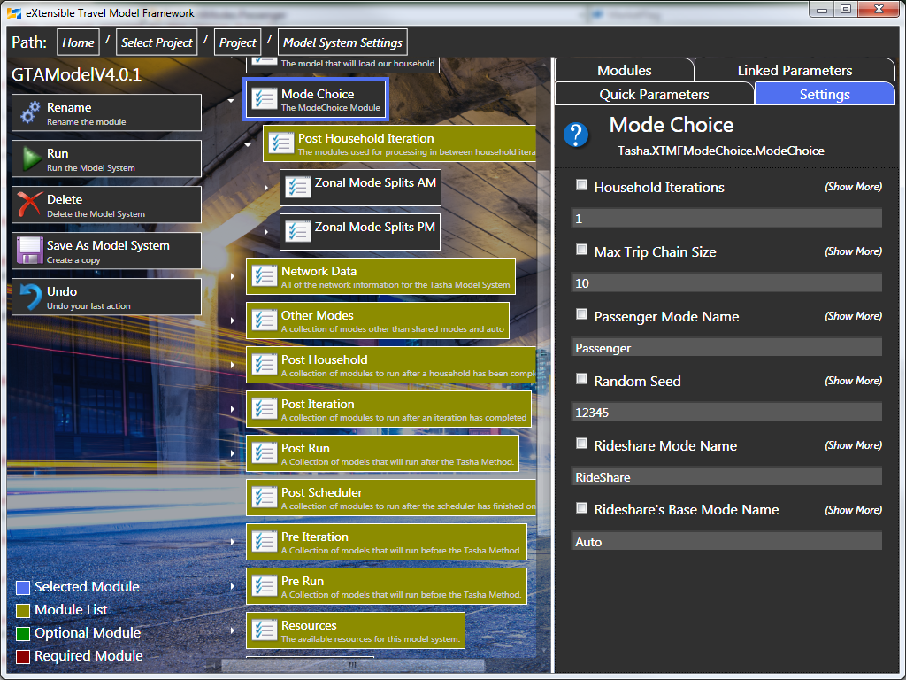
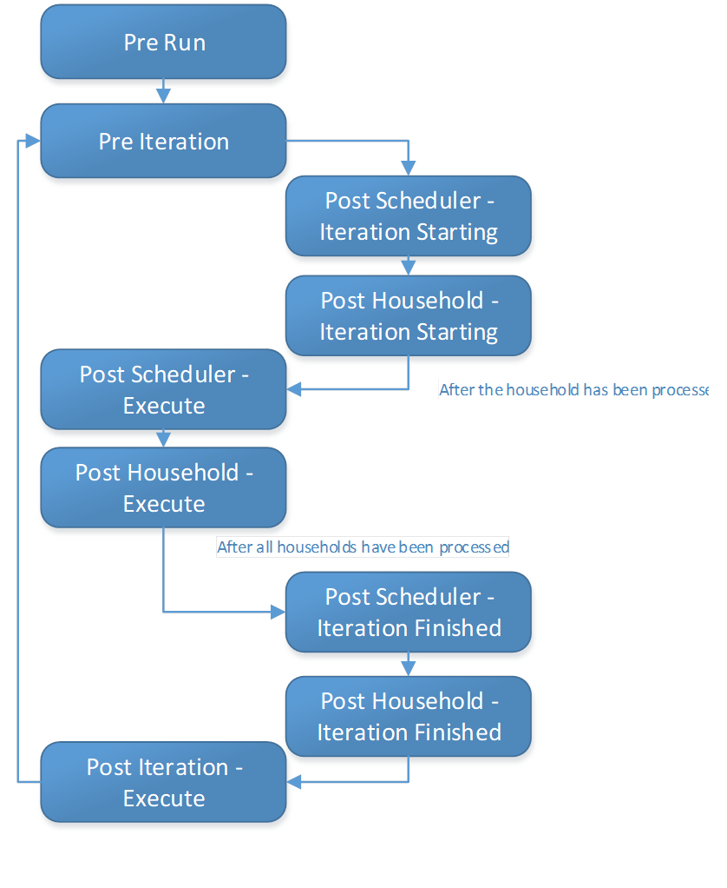

Integrating into GTAModel
Overview
Sometimes you might want to extract out data from GTAModel V4.0 that just isn’t easily available from the default model system. In some cases modules already exist that can be added to the model system to accomplish this. If possible please try to re-use modules, or contact TMG with a request for a feature enhancement to one. If TMG is unable to satisfy the request you can follow the programming guide in the XTMF documentation to learn how to create your own modules in conjunction with this chapter to learn where integration has been made available.

Pre-Run
Pre Run contains all of the modules that need to be executed before the main model system executes. You can use this to automatically copy files. In GTAModel V4.0.1 we use it to do the base EMME auto and transit assignments so we have travel time data ready for the main model. If for instance you wished to analyze the resulting EMME assignments you could add validation modules after the EMME assignments have run.
Modules must implement the ISelfContainedModel interface to integrate into this section.
Pre-Iteration
Pre Iterations contains all of the modules that need to be executed before the main iteration happens, including the loading of households. Only Pre Run modules, the loading of the zone system, and network data will execute before Pre Iteration modules. Currently in GTAModel V4.0.1 we compute the aggregate PoRPoS, PoRPoW, and airport models at this stage.
Modules must implement the Tasha.Common.IPreIteration interface in order to integrate into this section.
Post-Scheduler
Post scheduler contains all modules that need to integrate into the model after a schedule has been defined but before modes have been assigned via the mode choice. GTAModel V4.0 currently does not contain any modules of this kind. This primary need for this interface would be for mutating the trip chains before they get into the mode choice algorithm which has been used in the validation of the model’s code previously.
Modules must implement the Tasha.Common.IPostScheduler interface in order to integrate into this section.
Post Household
Post Household contains all of the modules that need to access the household’s data after it has been finished by both the scheduler and mode choice algorithms. Currently GTAModel V4.0.1 uses this to generate the EMME demand matrices and aggregate validation data. This is by far the most common point to integrate into GTAModel V4.0.
Modules must implement the Tasha.Common.IPostHousehold interface in order to integrate into this section.
Post Iteration
Post Iteration modules execute after an iteration has finished execution. In GTAModel V4.0 this is where we compute station capacity factors, run the main EMME network assignments and aggregate the mode split data by regions and planning districts.
Modules must implement the Tasha.Common.IPostIteration interface in order to integrate into this section.
Post Household Iteration
Post Household Iteration modules are the lowest level of integration into the mode choice possible. It is advised to avoid using this if another interface would have sufficed. Currently researchers and students are using this interface to do detailed model integration with extremely detailed outputs from mode choice such as the conflicts for auto allocation, greenhouse gas emissions, and the separation between schedule optimal, assigned, and recovered utilities.
The difference between this interface and post household is that in application Tasha can do more than one household iteration when solving a household’s schedule in order to provide a smoother assignment to the network layer. Since memory requirements to keep all of these choices active between iterations is infeasible today it is recycled for each household iteration. Integrating an analysis in-between household iterations allows us to recover this otherwise lost data.
Modules must implement the Tasha.Common.IPostHouseholdIteration interface in order to integrate into this section. The modules are located as sub-modules of the mode choice model.
Order of Execution
The following diagram shows the order of execution for the points of integration into GTAModel V4.0.
